DIP-Python tutorials for image processing and machine learning(73-78)-U-net
学习自 Youtube 博主 DigitalSreeni。
文字数：---
正文
73 - Image Segmentation using U-Net - Part1 -What is U-net-
卷积神经网络的架构：
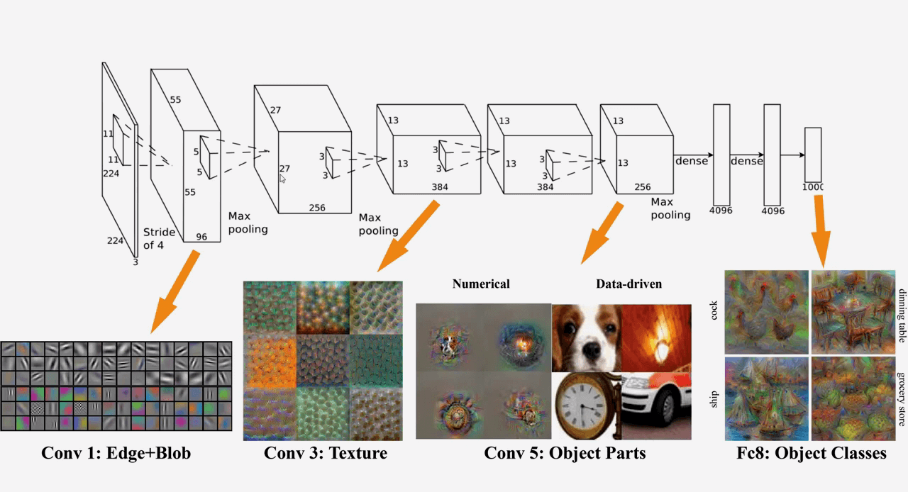
常见的卷积神经网络：
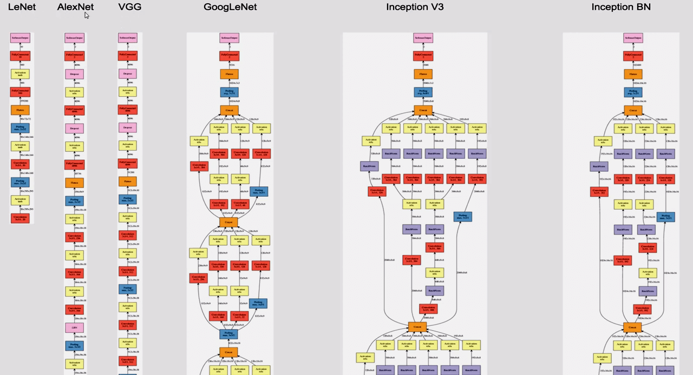
U-Net：
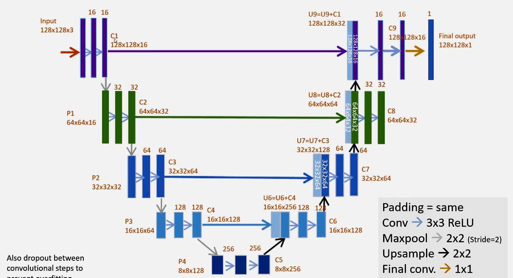
VGG 示意图及其代码：
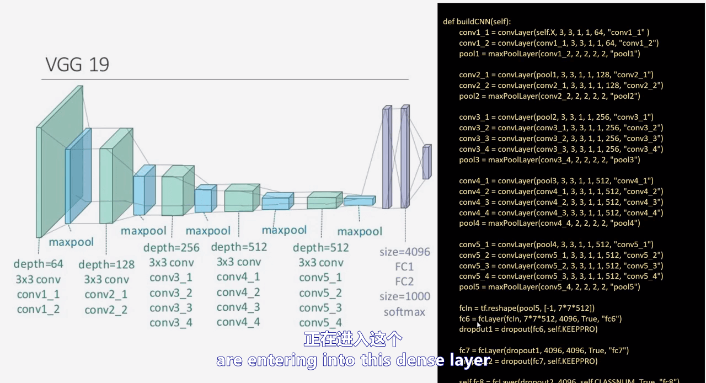
U-Net architecture is designed for Semantic segmentation（语义分割）
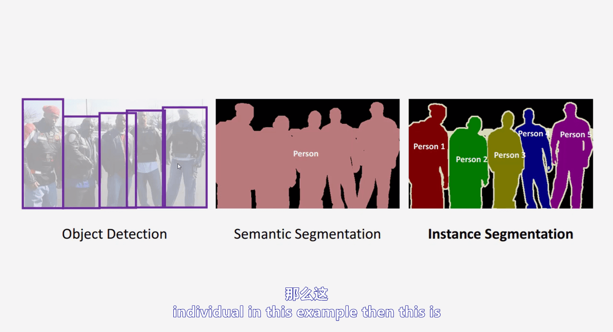
74 - Image Segmentation using U-Net - Part 2 -Defining U-Net in Python using Keras-
1 | |
建立模型
1 | |
Model: "model"
__________________________________________________________________________________________________
Layer (type) Output Shape Param # Connected to
==================================================================================================
input_2 (InputLayer) [(None, 128, 128, 3 0 []
)]
lambda (Lambda) (None, 128, 128, 3) 0 ['input_2[0][0]']
conv2d (Conv2D) (None, 128, 128, 16 448 ['lambda[0][0]']
)
dropout (Dropout) (None, 128, 128, 16 0 ['conv2d[0][0]']
)
conv2d_1 (Conv2D) (None, 128, 128, 16 2320 ['dropout[0][0]']
)
max_pooling2d (MaxPooling2D) (None, 64, 64, 16) 0 ['conv2d_1[0][0]']
conv2d_2 (Conv2D) (None, 64, 64, 32) 4640 ['max_pooling2d[0][0]']
dropout_1 (Dropout) (None, 64, 64, 32) 0 ['conv2d_2[0][0]']
conv2d_3 (Conv2D) (None, 64, 64, 32) 9248 ['dropout_1[0][0]']
max_pooling2d_1 (MaxPooling2D) (None, 32, 32, 32) 0 ['conv2d_3[0][0]']
conv2d_4 (Conv2D) (None, 32, 32, 64) 18496 ['max_pooling2d_1[0][0]']
dropout_2 (Dropout) (None, 32, 32, 64) 0 ['conv2d_4[0][0]']
conv2d_5 (Conv2D) (None, 32, 32, 64) 36928 ['dropout_2[0][0]']
max_pooling2d_2 (MaxPooling2D) (None, 16, 16, 64) 0 ['conv2d_5[0][0]']
conv2d_6 (Conv2D) (None, 16, 16, 128) 73856 ['max_pooling2d_2[0][0]']
dropout_3 (Dropout) (None, 16, 16, 128) 0 ['conv2d_6[0][0]']
conv2d_7 (Conv2D) (None, 16, 16, 128) 147584 ['dropout_3[0][0]']
max_pooling2d_3 (MaxPooling2D) (None, 8, 8, 128) 0 ['conv2d_7[0][0]']
conv2d_8 (Conv2D) (None, 8, 8, 256) 295168 ['max_pooling2d_3[0][0]']
dropout_4 (Dropout) (None, 8, 8, 256) 0 ['conv2d_8[0][0]']
conv2d_9 (Conv2D) (None, 8, 8, 256) 590080 ['dropout_4[0][0]']
conv2d_transpose (Conv2DTransp (None, 16, 16, 128) 131200 ['conv2d_9[0][0]']
ose)
concatenate (Concatenate) (None, 16, 16, 256) 0 ['conv2d_transpose[0][0]',
'conv2d_7[0][0]']
conv2d_10 (Conv2D) (None, 16, 16, 128) 295040 ['concatenate[0][0]']
dropout_5 (Dropout) (None, 16, 16, 128) 0 ['conv2d_10[0][0]']
conv2d_11 (Conv2D) (None, 16, 16, 128) 147584 ['dropout_5[0][0]']
conv2d_transpose_1 (Conv2DTran (None, 32, 32, 64) 32832 ['conv2d_11[0][0]']
spose)
concatenate_1 (Concatenate) (None, 32, 32, 128) 0 ['conv2d_transpose_1[0][0]',
'conv2d_5[0][0]']
conv2d_12 (Conv2D) (None, 32, 32, 64) 73792 ['concatenate_1[0][0]']
dropout_6 (Dropout) (None, 32, 32, 64) 0 ['conv2d_12[0][0]']
conv2d_13 (Conv2D) (None, 32, 32, 64) 36928 ['dropout_6[0][0]']
conv2d_transpose_2 (Conv2DTran (None, 64, 64, 32) 8224 ['conv2d_13[0][0]']
spose)
concatenate_2 (Concatenate) (None, 64, 64, 64) 0 ['conv2d_transpose_2[0][0]',
'conv2d_3[0][0]']
conv2d_14 (Conv2D) (None, 64, 64, 32) 18464 ['concatenate_2[0][0]']
dropout_7 (Dropout) (None, 64, 64, 32) 0 ['conv2d_14[0][0]']
conv2d_15 (Conv2D) (None, 64, 64, 32) 9248 ['dropout_7[0][0]']
conv2d_transpose_3 (Conv2DTran (None, 128, 128, 16 2064 ['conv2d_15[0][0]']
spose) )
concatenate_3 (Concatenate) (None, 128, 128, 32 0 ['conv2d_transpose_3[0][0]',
) 'conv2d_1[0][0]']
conv2d_16 (Conv2D) (None, 128, 128, 16 4624 ['concatenate_3[0][0]']
)
dropout_8 (Dropout) (None, 128, 128, 16 0 ['conv2d_16[0][0]']
)
conv2d_17 (Conv2D) (None, 128, 128, 16 2320 ['dropout_8[0][0]']
)
conv2d_18 (Conv2D) (None, 128, 128, 1) 17 ['conv2d_17[0][0]']
==================================================================================================
Total params: 1,941,105
Trainable params: 1,941,105
Non-trainable params: 0
__________________________________________________________________________________________________
1 | |
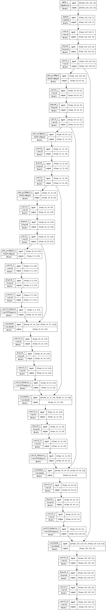
75 - Image Segmentation using U-Net - Part 3 -What are trainable parameters-
介绍了神经网络中参数量是怎么算的。
76 - Image Segmentation using U-Net - Part 4 -Model fitting- checkpoints- and callbacks-
Modelcheckpoint
1 | |
77 - Image Segmentation using U-Net - Part 5 -Understanding the data-
获取数据集：2018 Data Science Bowl | Kaggle
78 - Image Segmentation using U-Net - Part 6 -Running the code and understanding results-
1 | |
Resizing training images and masks
1 | |
Resizing training images and masks
100%|██████████| 670/670 [04:38<00:00, 2.41it/s]
Resizing test images
1 | |
Resizing test images
100%|██████████| 65/65 [00:01<00:00, 50.05it/s]
Done!
1 | |
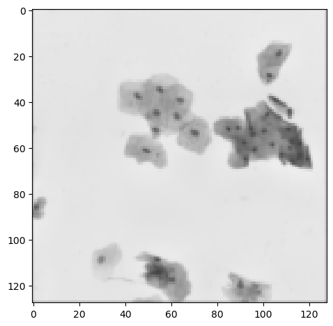
1 | |
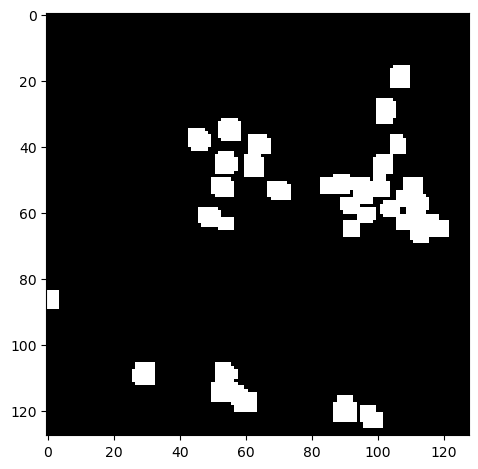
1 | |
Modelcheckpoint
1 | |
1 | |
Epoch 1/25
38/38 [==============================] - 20s 280ms/step - loss: 0.5785 - accuracy: 0.7459 - val_loss: 0.3360 - val_accuracy: 0.7809
Epoch 2/25
38/38 [==============================] - 7s 173ms/step - loss: 0.2739 - accuracy: 0.8642 - val_loss: 0.2158 - val_accuracy: 0.9125
Epoch 3/25
38/38 [==============================] - 7s 174ms/step - loss: 0.1924 - accuracy: 0.9304 - val_loss: 0.1558 - val_accuracy: 0.9406
Epoch 4/25
38/38 [==============================] - 7s 173ms/step - loss: 0.1589 - accuracy: 0.9422 - val_loss: 0.1474 - val_accuracy: 0.9425
Epoch 5/25
38/38 [==============================] - 7s 175ms/step - loss: 0.1449 - accuracy: 0.9472 - val_loss: 0.1173 - val_accuracy: 0.9543
Epoch 6/25
38/38 [==============================] - 7s 176ms/step - loss: 0.1394 - accuracy: 0.9480 - val_loss: 0.1090 - val_accuracy: 0.9565
Epoch 7/25
38/38 [==============================] - 7s 176ms/step - loss: 0.1246 - accuracy: 0.9540 - val_loss: 0.1084 - val_accuracy: 0.9579
Epoch 8/25
38/38 [==============================] - 7s 177ms/step - loss: 0.1204 - accuracy: 0.9553 - val_loss: 0.1113 - val_accuracy: 0.9577
Epoch 9/25
38/38 [==============================] - 7s 177ms/step - loss: 0.1124 - accuracy: 0.9581 - val_loss: 0.0957 - val_accuracy: 0.9611
Epoch 10/25
38/38 [==============================] - 7s 177ms/step - loss: 0.1087 - accuracy: 0.9591 - val_loss: 0.0930 - val_accuracy: 0.9618
Epoch 11/25
38/38 [==============================] - 7s 179ms/step - loss: 0.1079 - accuracy: 0.9593 - val_loss: 0.0892 - val_accuracy: 0.9650
Epoch 12/25
38/38 [==============================] - 7s 179ms/step - loss: 0.1044 - accuracy: 0.9605 - val_loss: 0.0918 - val_accuracy: 0.9643
Epoch 13/25
38/38 [==============================] - 7s 180ms/step - loss: 0.1021 - accuracy: 0.9608 - val_loss: 0.0888 - val_accuracy: 0.9651
Epoch 14/25
38/38 [==============================] - 7s 180ms/step - loss: 0.0989 - accuracy: 0.9621 - val_loss: 0.0950 - val_accuracy: 0.9616
Epoch 15/25
38/38 [==============================] - 7s 180ms/step - loss: 0.1003 - accuracy: 0.9612 - val_loss: 0.0858 - val_accuracy: 0.9661
Epoch 16/25
38/38 [==============================] - 7s 180ms/step - loss: 0.1005 - accuracy: 0.9613 - val_loss: 0.0872 - val_accuracy: 0.9660
Epoch 17/25
38/38 [==============================] - 7s 181ms/step - loss: 0.0963 - accuracy: 0.9630 - val_loss: 0.0846 - val_accuracy: 0.9659
Epoch 18/25
38/38 [==============================] - 7s 184ms/step - loss: 0.0956 - accuracy: 0.9632 - val_loss: 0.0840 - val_accuracy: 0.9665
Epoch 19/25
38/38 [==============================] - 7s 183ms/step - loss: 0.0925 - accuracy: 0.9642 - val_loss: 0.0819 - val_accuracy: 0.9675
Epoch 20/25
38/38 [==============================] - 7s 183ms/step - loss: 0.0927 - accuracy: 0.9640 - val_loss: 0.0833 - val_accuracy: 0.9677
Epoch 21/25
38/38 [==============================] - 7s 183ms/step - loss: 0.0917 - accuracy: 0.9641 - val_loss: 0.0846 - val_accuracy: 0.9660
1 | |
19/19 [==============================] - 5s 161ms/step
3/3 [==============================] - 0s 91ms/step
3/3 [==============================] - 1s 417ms/step
Perform a sanity check on some random training samples
- 对一些随机训练样本进行合理性检查
1 | |
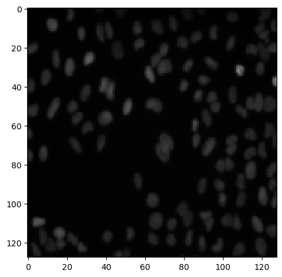
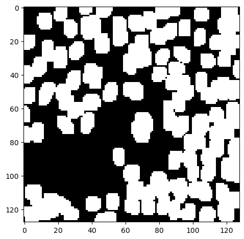
C:\Users\gzjzx\anaconda3\lib\site-packages\skimage\io\_plugins\matplotlib_plugin.py:150: UserWarning: Low image data range; displaying image with stretched contrast.
lo, hi, cmap = _get_display_range(image)
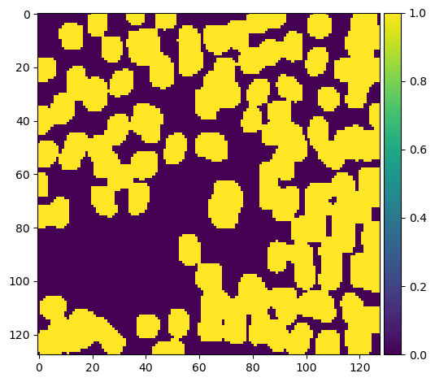
Perform a sanity check on some random validation samples
- 对一些随机的验证样本进行合理性检查
1 | |
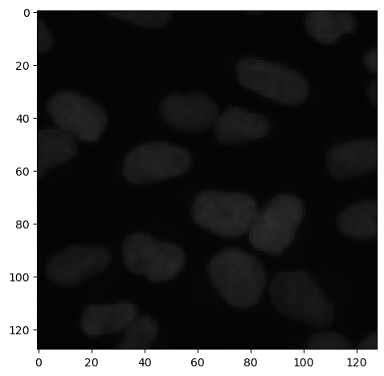
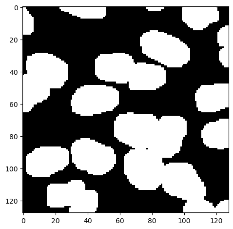
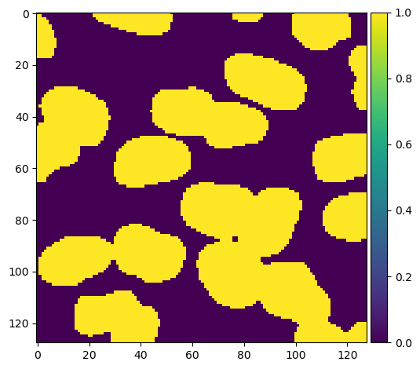
可视化结果
1 | |
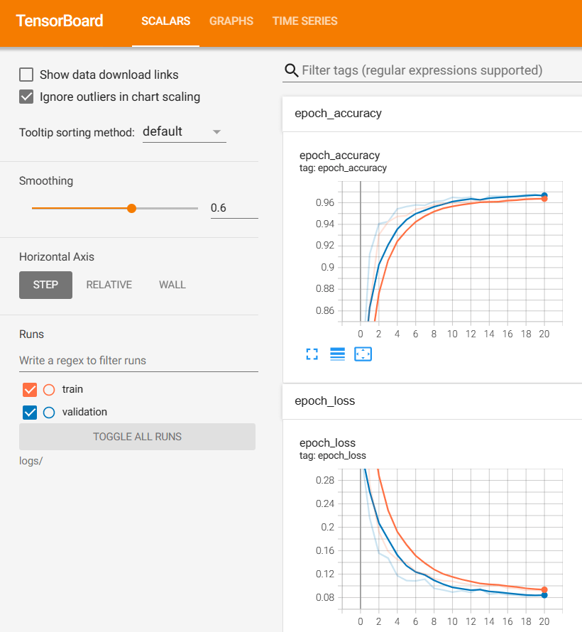